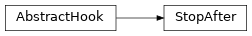
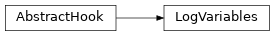
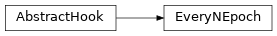
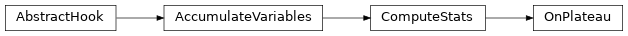
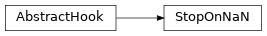
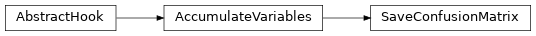
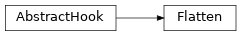
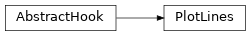
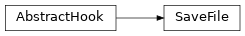
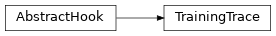

emloop.hooks¶
Module with official emloop hooks.
Tip
Hooks listed here may be configured without specifying their fully qualified names. E.g.:
hooks:
- SaveBest
Classes¶
AbstractHook: emloop hook interface.AccumulateVariables: Accumulate the specified variables allowing their aggregation after each epoch.WriteCSV: Logepoch_datavariables to a CSV file after each epoch.StopAfter: Stop the training after any of the specified conditions is met.LogVariables: Log the training results to stderr via standardloggingmodule.LogProfile: Summarize and log epoch profile via standardlogging.LogDir: Log the output dir before training, after each epoch and after training.SaveEvery: Save the model everyn_epochsepoch.SaveBest: Maintain the best performing model given the specified criteria.SaveLatest: Save the latest model.ComputeStats: Accumulate the specified variables, compute the specified aggregation values and save them to the epoch data.Check: Terminate training if the given stream variable exceeds the threshold in at most specified number of epochs.ShowProgress: Show stream progresses and ETA in the current epoch.EveryNEpoch: This hook should be used as base hook in the case when some action need to be processed every n epoch.OnPlateau: Base hook for hooks taking actions when certain variable reaches its plateau.StopOnPlateau: Terminate the training when the observed variable reaches its plateau.StopOnNaN: Stop the training when any of the specified variables contain NaN.SaveConfusionMatrix: After each epoch, compute and save/store confusion matrix figure for the predicted and expected labels.Flatten: Flatten a stream variable.PlotLines: Plot sequences of numbers using matplotlib.LogitsToCsv: Save a stream of logits to a csv file.SequenceToCsv: Save a stream of sequences to a csv file.SaveFile: Save files to the output dir before training.Benchmark: Log mean and median example times via standardlogging.ClassificationMetrics: Accumulate the specified prediction and gt variables and compute their classification statistics after each epoch.TrainingTrace: Takes care of the “trace.yaml” file in output_dir.
-
class
emloop.hooks.AbstractHook(**kwargs)¶ Bases:
objectemloop hook interface.
Hook lifecycle (event -> method invocation):
emloop constructs the hooks ->
__init__()- emloop enters the main loop ->
before_training() emloop starts an epoch
emloop computes a batch ->
after_batch()emloop finishes the epoch ->
after_epoch()andafter_epoch_profile()
- emloop enters the main loop ->
emloop terminates the main loop ->
after_training()
Caution
Hook naming conventions:
hook names should describe hook actions with verb stems. E.g.:
LogProfileorSaveBesthook names should not include
Hooksuffix
-
__init__(**kwargs)[source]¶ Check and warn if there is any argument created by the user yet not recognized in the child hook
__init__method.- Parameters
kwargs –
**kwargsnot recognized in the child hook
-
after_batch(stream_name, batch_data)[source]¶ After batch event.
This event is triggered after every processed batch regardless of stream type. Batch results are available in results argument.
-
after_epoch(epoch_id, epoch_data)[source]¶ After epoch event.
This event is triggered after every epoch wherein all the streams were iterated. The
epoch_dataobject is initially empty and shared among all the hooks.
-
after_epoch_profile(epoch_id, profile, streams)[source]¶ After epoch profile event.
This event provides opportunity to process time profile of the finished epoch.
-
after_training(success)[source]¶ After training event.
This event is called after the training finished either naturally or thanks to an interrupt.
Note
This method is called exactly once during the training.
- Parameters
success (
bool) – whether the training ended with successfully or with exception- Return type
None
-
before_training()[source]¶ Before training event.
No data were processed at this moment.
Note
This method is called exactly once during the training.
- Return type
None
-
register_mainloop(main_loop)[source]¶ Pass
emloop.MainLoopto hook. RaiseValueErrorif MainLoop was already passed before.- Parameters
main_loop (emloop.MainLoop) – emloop main loop for training
- Raises
ValueError – if MainLoop was already passed before
- Return type
-
class
emloop.hooks.AccumulateVariables(variables, **kwargs)[source]¶ Bases:
hooks.AbstractHookAccumulate the specified variables allowing their aggregation after each epoch.
The hook itself does not utilize the accumulated variables. It is meant to be inherited from. The child hook will have the accumulated variables available in
self._accumulatorafter each epoch.The data are accumulated in a form of nested mapping
stream_name->variable_name->Iterable``[``values].Warning
This hook should not be used directly as it does nothing on its own.

-
_reset_accumulator()[source]¶ Set the accumulator to an empty double-index
collections.defaultdict.
-
-
class
emloop.hooks.WriteCSV(output_dir, output_file='training.csv', delimiter=', ', default_value='', variables=None, on_unknown_type='default', on_missing_variable='error', **kwargs)[source]¶ Bases:
hooks.AbstractHookLog
epoch_datavariables to a CSV file after each epoch.Log all the variables¶hooks: - WriteCSV
Log only certain variables¶hooks: - WriteCSV: variables: [loss, fscore]
Warn about unsupported variables¶hooks: - WriteCSV: variables: [loss, fscore, xxx] on_unknown_type: warn

-
MISSING_VARIABLE_ACTIONS= ['error', 'warn', 'default']¶ Action executed on missing variable.
-
UNKNOWN_TYPE_ACTIONS= ['error', 'warn', 'default']¶ Action executed on unknown type detection.
-
__init__(output_dir, output_file='training.csv', delimiter=', ', default_value='', variables=None, on_unknown_type='default', on_missing_variable='error', **kwargs)[source]¶ - Parameters
output_dir (
str) – directory to save the output CSVoutput_file (
str) – name of the output CSV filedelimiter (
str) – CSV delimiterdefault_value (
str) – default value to supplement missing variablesvariables (
Optional[Iterable[str]]) – subset of variable names to be written (all the variables are written by default)on_unknown_type (
str) – an action to be taken if the variable value type is not supported (e.g. a list)on_missing_variable (
str) – an action to be taken if the variable is specified but not provided
-
_write_header(epoch_data)[source]¶ Write CSV header row with column names.
Column names are inferred from the
epoch_dataandself.variables(if specified). Variables and streams expected later on are stored inself._variablesandself._streamsrespectively.
-
-
class
emloop.hooks.StopAfter(epochs=None, iterations=None, minutes=None, train_stream_name='train', **kwargs)[source]¶ Bases:
hooks.AbstractHookStop the training after any of the specified conditions is met.
:caption: stop the training after 500 epochs hooks: - StopAfter: epochs: 500
:caption: stop the training after 1000 iterations of 1 hour whichever comes first hooks: - StopAfter: minutes: 60 iterations: 1000
-
__init__(epochs=None, iterations=None, minutes=None, train_stream_name='train', **kwargs)[source]¶ Create new StopAfter hook.
Possible stopping conditions are:
after the specified number of epochs
after the specified number of iterations (only train stream batches are counted as iterations)
after the model is trained for more than the specified number of minutes (and
after_batch,after_epochevent is triggered)
-
_check_train_time()[source]¶ Stop the training if the training time exceeded
self._minutes.- Raises
TrainingTerminated – if the training time exceeded
self._minutes- Return type
None
-
after_batch(stream_name, batch_data)[source]¶ If
stream_nameequals toemloop.constants.TRAIN_STREAM, increase the iterations counter and possibly stop the training; additionally, call_check_train_time().
-
after_epoch(epoch_id, epoch_data)[source]¶ Stop the training if the
epoch_idreachesself._epochs; additionally, call_check_train_time().- Parameters
- Raises
TrainingTerminated – if the
epoch_idreachesself._epochs- Return type
None
-
-
class
emloop.hooks.LogVariables(variables=None, on_unknown_type='ignore', **kwargs)[source]¶ Bases:
hooks.AbstractHookLog the training results to stderr via standard
loggingmodule.log all the variables¶hooks: - LogVariables
log only certain variables¶hooks: - LogVariables: variables: [loss]
warn about unsupported variables¶hooks: - LogVariables: on_unknown_type: warn
-
UNKNOWN_TYPE_ACTIONS= ['error', 'warn', 'str', 'ignore']¶ Posible actions to take on unknown variable type.
-
_log_variables(epoch_data)[source]¶ Log variables from the epoch data.
Warning
At the moment, only scalars and dicts of scalars are properly formatted and logged. Other value types are ignored by default.
One may set
on_unknown_typetostrin order to log all the variables anyways.
-
-
class
emloop.hooks.LogProfile(**kwargs)[source]¶ Bases:
hooks.AbstractHookSummarize and log epoch profile via standard
logging.Epoch profile contains info about time spent training, reading data etc. For full reference, see
emloop.MainLoop.log the time profile after each epoch¶hooks: - LogProfile

-
class
emloop.hooks.LogDir(output_dir, **kwargs)[source]¶ Bases:
hooks.AbstractHookLog the output dir before training, after each epoch and after training.
log the training dir¶hooks: - LogDir

-
class
emloop.hooks.SaveEvery(model, on_failure='error', **kwargs)[source]¶ Bases:
emloop.hooks.every_n_epoch.EveryNEpochSave the model every
n_epochsepoch.save every 10th epoch¶hooks: - SaveEvery: n_epochs: 10
save every epoch and only warn on failure¶hooks: - SaveEvery: on_failure: warn

-
SAVE_FAILURE_ACTIONS= ['error', 'warn', 'ignore']¶ Action to be executed when model save fails.
-
__init__(model, on_failure='error', **kwargs)[source]¶ - Parameters
model (
AbstractModel) – trained modelon_failure (
str) – action to be taken when model fails to save itself; one ofSAVE_FAILURE_ACTIONS
-
_after_n_epoch(epoch_id, **_)[source]¶ Save the model every
n_epochsepoch.- Parameters
epoch_id (
int) – number of the processed epoch- Return type
None
-
static
save_model(model, name_suffix, on_failure)[source]¶ Save the given model with the given name_suffix. On failure, take the specified action.
- Parameters
model (
AbstractModel) – the model to be savedname_suffix (
str) – name to be used for savingon_failure (
str) – action to be taken on failure; one ofSAVE_FAILURE_ACTIONS
- Raises
IOError – on save failure with
on_failureset toerror- Return type
None
-
-
class
emloop.hooks.SaveBest(model, model_name='best', variable='loss', condition='min', stream='valid', aggregation='mean', on_save_failure='error', **kwargs)[source]¶ Bases:
hooks.AbstractHookMaintain the best performing model given the specified criteria.
save model with minimal valid loss¶hooks: - SaveBest
save model with max accuracy¶hooks: - SaveBest: variable: accuracy condition: max

-
OBJECTIVES= {'max', 'min'}¶ Possible objectives for the monitor variable.
-
__init__(model, model_name='best', variable='loss', condition='min', stream='valid', aggregation='mean', on_save_failure='error', **kwargs)[source]¶ Example: metric=loss, condition=min -> saved the model when the loss is best so far (on stream).
- Parameters
model (
AbstractModel) – trained modelmodel_name (
str) – name under which model will be savedvariable (
str) – variable name to be monitoredcondition (
str) – performance objective; one ofOBJECTIVESstream (
str) – stream name to be monitoredaggregation (
str) – variable aggregation to be used (meanby default)on_save_failure (
str) – action to be taken when model fails to save itself, one ofSaveEvery.SAVE_FAILURE_ACTIONS
-
_get_value(epoch_data)[source]¶ Retrieve the value of the monitored variable from the given epoch data.
- Parameters
epoch_data (
Mapping[str,object]) – epoch data which determine whether the model will be saved or not- Raises
KeyError – if any of the specified stream, variable or aggregation is not present in the
epoch_dataTypeError – if the variable value is not a dict when aggregation is specified
ValueError – if the variable value is not a scalar
- Return type
-
-
class
emloop.hooks.SaveLatest(model, on_save_failure='error', **kwargs)[source]¶ Bases:
hooks.AbstractHookSave the latest model.
save the latest model¶hooks: - SaveLatest

-
__init__(model, on_save_failure='error', **kwargs)[source]¶ Create new SaveLatest hook.
- Parameters
model (
AbstractModel) – trained modelon_save_failure (
str) – action to be taken when model fails to save itself, one ofSaveEvery.SAVE_FAILURE_ACTIONS
-
-
class
emloop.hooks.ComputeStats(variables, **kwargs)[source]¶ Bases:
emloop.hooks.accumulate_variables.AccumulateVariablesAccumulate the specified variables, compute the specified aggregation values and save them to the epoch data.
compute loss and accuracy means after each epoch¶hooks: - ComputeStats: variables: [loss, accuracy]
compute min and max loss after each epoch¶hooks: - ComputeStats: variables: - loss : [min, max]

-
EXTRA_AGGREGATIONS= {'nancount', 'nanfraction'}¶ Extra aggregation methods extending the set of all NumPy functions.
-
__init__(variables, **kwargs)[source]¶ Create new stats hook.
- Parameters
variables – list of variables mapping:
variable_name->List[aggregations…] whereinaggregationsare the names of arbitrary NumPy functions returning a scalar (e.g.,'mean','nanmean','max', etc.) or one ofEXTRA_AGGREGATIONS. Passing just thevariable nameinstead of a mapping is the same as passing {variable_name: [‘mean’]}.kwargs – Ignored
- Raises
ValueError – if the specified aggregation function is not supported
-
static
_compute_aggregation(aggregation, data)[source]¶ Compute the specified aggregation on the given data.
- Parameters
aggregation (
str) – the name of an arbitrary NumPy function (e.g., mean, max, median, nanmean, …) or one ofEXTRA_AGGREGATIONS.
- Raises
ValueError – if the specified aggregation is not supported or found in NumPy
-
static
_raise_check_aggregation(aggregation)[source]¶ Check whether the given aggregation is present in NumPy or it is one of EXTRA_AGGREGATIONS.
- Parameters
aggregation (
str) – the aggregation name- Raises
ValueError – if the specified aggregation is not supported or found in NumPy
-
-
class
emloop.hooks.Check(variable, required_min_value, max_epoch, stream='valid', **kwargs)[source]¶ Bases:
hooks.AbstractHookTerminate training if the given stream variable exceeds the threshold in at most specified number of epochs.
Raise
ValueErrorif the threshold was not exceeded in given number of epochsexceed 95% accuracy on valid (default) stream within at most 10 epochs¶hooks: - Check: variable: accuracy required_min_value: 0.93 max_epoch: 10

-
__init__(variable, required_min_value, max_epoch, stream='valid', **kwargs)[source]¶ Create new Check hook.
-
after_epoch(epoch_id, epoch_data)[source]¶ Check termination conditions.
- Parameters
- Raises
KeyError – if the stream of variable was not found in
epoch_dataTypeError – if the monitored variable is not a scalar or scalar
meanaggregationValueError – if the specified number of epochs exceeded
TrainingTerminated – if the monitor variable is above the required level
-
-
class
emloop.hooks.ShowProgress(dataset, **kwargs)[source]¶ Bases:
hooks.AbstractHookShow stream progresses and ETA in the current epoch.
Tip
If the dataset provides
num_batchesproperty, the hook will be able to display the progress and ETA for the 1st epoch as well. The property should return a mapping of<stream name>-><batch count>.Caution
ShowProgresshook should be placed as the first in hooks config section, otherwise the progress bar may not be displayed correctly.show progress of the current epoch¶hooks: - ShowProgress

-
__init__(dataset, **kwargs)[source]¶ Create new ShowProgress hook.
Fetch the batch counts from
dataset.num_batchesproperty if available.- Parameters
dataset (
AbstractDataset) – training dataset
-
-
class
emloop.hooks.EveryNEpoch(n_epochs=1, **kwargs)[source]¶ Bases:
hooks.AbstractHookThis hook should be used as base hook in the case when some action need to be processed every n epoch. Call
_after_n_epochmethod everyn_epochsepoch.-
__init__(n_epochs=1, **kwargs)[source]¶ Create EveryNEpoch hook.
- Parameters
n_epochs (
int) – how often_after_n_epochmethod is called
-
-
class
emloop.hooks.OnPlateau(long_term=50, short_term=10, stream='valid', variable='loss', objective='min', **kwargs)[source]¶ Bases:
emloop.hooks.compute_stats.ComputeStatsBase hook for hooks taking actions when certain variable reaches its plateau. The variable is observed on epoch level and plateau is reached when its
long_termmean is lower/greater than theshort_termmean.Call
_on_plateau_action()method when the observed variable reaches its plateau.-
OBJECTIVES= {'max', 'min'}¶ Possible objectives for the observed variable.
-
_AGGREGATION= 'mean'¶ Epoch aggregation method of the observed variable.
-
__init__(long_term=50, short_term=10, stream='valid', variable='loss', objective='min', **kwargs)[source]¶ Create new OnPlateau hook.
- Parameters
long_term (
int) – count of last epochs representing long training periodshort_term (
int) – count of last epochs representing short training periodstream (
str) – name of the processed streamvariable (
str) – name of the observed variableobjective (
str) – observed variable objective; one ofOnPlateau.OBJECTIVESkwargs – ignored
- Raises
AssertionError – if
long_term<short_term
-
_on_plateau_action(**kwargs)[source]¶ Abstract method which is called when the observed variable reaches its plateau.
- Return type
None
-
after_epoch(epoch_id, epoch_data)[source]¶ Call
_on_plateau_action()if thelong_termvariable mean is lower/greater than theshort_termmean.- Return type
None
-
-
class
emloop.hooks.StopOnPlateau(long_term=50, short_term=10, stream='valid', variable='loss', objective='min', **kwargs)[source]¶ Bases:
emloop.hooks.on_plateau.OnPlateauTerminate the training when the observed variable reaches its plateau.
stop the training when the mean of last 100 validlossvalues is smaller than the mean of last 30lossvalues.¶hooks: - StopOnPlateau: long_term: 100 short_term: 30
stop the training when accuracy stops improving (raising)¶hooks: - StopOnPlateau: variable: accuracy objective: max

-
_on_plateau_action(**kwargs)[source]¶ Terminate the training when the observed variable reaches its plateau.
- Raises
TrainingTerminated – if the model stops improving
- Return type
None
-
-
class
emloop.hooks.StopOnNaN(variables=None, on_unknown_type='ignore', stop_on_inf=False, after_batch=False, after_epoch=True, **kwargs)[source]¶ Bases:
hooks.AbstractHookStop the training when any of the specified variables contain NaN.
stop as soon as any variable contains NaN¶hooks: - StopOnNaN
stop on NaN in loss variable¶hooks: - StopOnNan: variables: [loss]
-
UNKNOWN_TYPE_ACTIONS= ['error', 'warn', 'ignore']¶ Posible actions to take on unknown variable type.
-
__init__(variables=None, on_unknown_type='ignore', stop_on_inf=False, after_batch=False, after_epoch=True, **kwargs)[source]¶ Create new StopOnNaN hook.
- Parameters
variables (
Optional[Iterable[str]]) – variable names to be checked; check all variables inepoch_databy defaulton_unkown_type – option for handling unknown data types, possible options are
'warn','error'and default'ignore'stop_on_inf (
bool) – if True consider infinity values as NaN, default is Falseafter_batch (
bool) – check data after each batch? default is Falseafter_epoch (
bool) – check data after each epoch? default is True
- Raises
AssertionError – for undefined
on_unknown_typeAssertionError – if both
after_batchandafter_epochare False
-
_check_nan(epoch_data)[source]¶ Raise an exception when some of the monitored data is NaN.
- Parameters
- Raises
KeyError – if the specified variable is not found in the stream
ValueError – if the variable value is of unsupported type and
self._on_unknown_typeis set toerror
- Return type
None
-
_is_nan(variable, data)[source]¶ Recursively search passed data and find NaNs.
- Parameters
variable (
str) – name of variable to be checkeddata – data object (dict, list, scalar)
- Return type
- Returns
True if there is a NaN value in the data; False otherwise.
- Raises
ValueError – if the variable value is of unsupported type and
on_unknown_typeis set toerror
-
-
class
emloop.hooks.SaveConfusionMatrix(output_dir, dataset, labels_name='labels', predictions_name='predictions', classes_names=None, figsize=None, figure_action='save', num_classes_method_name='num_classes', classes_names_method_name='classes_names', mask_name=None, normalize=True, cmap='Blues', **kwargs)[source]¶ Bases:
emloop.hooks.accumulate_variables.AccumulateVariablesAfter each epoch, compute and save/store confusion matrix figure for the predicted and expected labels.
Store confusion matrix figure to epoch data with green colorbar¶hooks: - SaveConfusionMatrix: figure_action: store cmap: Greens
Defined classes’ names and save confusion matrix figure to training logdir with absolute values¶hooks: - SaveConfusionMatrix: classes_names: [class_with_index_zero, class_with_index_one, class_with_index_three] normalize: False
-
FIGURE_ACTIONS= ['save', 'store']¶ Possible actions to be taken with the plotted figure. It can be either saved to a file or stored in the epoch data.
-
__init__(output_dir, dataset, labels_name='labels', predictions_name='predictions', classes_names=None, figsize=None, figure_action='save', num_classes_method_name='num_classes', classes_names_method_name='classes_names', mask_name=None, normalize=True, cmap='Blues', **kwargs)[source]¶ Create new
SaveConfusionMatrixhook.- Parameters
output_dir (
str) – output directorydataset (
BaseDataset) – dataset (needed to translate predictions to strings)labels_name (
str) – annotation variable namepredictions_name (
str) – prediction variable nameclasses_names (
Optional[Sequence[str]]) – List of classes’ namesfigsize (
Optional[Tuple[int,int]]) – the size of the matplotlib figurefigure_action (
str) – action to be taken with the plotted figure, one ofFIGURE_ACTIONSnormalize (
bool) – False for plotting absolute values in confusion matrix, True for relativenum_classes_method_name (
str) –self._datasetmethod name to get number of classesclasses_names_method_name (
str) –self._datasetmethod name to get classes’ names Parameter is ignored whenclasses_namesis providedmask_name (
Optional[str]) – the variable masking valid records (1 = valid, 0 = invalid)cmap (
str) – type of colorbar # http://matplotlib.org/examples/color/colormaps_reference.html
- Raises
ValueError – if the
figure_actionis not inFIGURE_ACTIONS
-
-
class
emloop.hooks.Flatten(variables, streams=None, **kwargs)[source]¶ Bases:
hooks.AbstractHookFlatten a stream variable.
Example: Flatten xs variable in test stream and save the result into variable xs_flat to be able to feed it intoSaveConfusionMatrixhook.¶hooks: - Flatten: variables: {xs: xs_flat} streams: [test] - SaveConfusionMatrix: variables: [xs_flat] streams: [test]

-
class
emloop.hooks.PlotLines(output_dir, variables, streams=None, id_variable='ids', pad_mask_variable=None, out_format='png', ymin=None, ymax=None, example_count=None, batch_count=None, root_dir='visual', **kwargs)[source]¶ Bases:
hooks.AbstractHookPlot sequences of numbers using matplotlib.
Plot xs variable for each example in test and valid streams.¶hooks: - PlotLines: variables: [xs] streams: [test, valid]
Plot xs and ys variables only for the first two examples from the first ten batches (from the train stream).¶hooks: - PlotLines: variables: [xs, ys] example_count: 2 batch_count: 10
-
__init__(output_dir, variables, streams=None, id_variable='ids', pad_mask_variable=None, out_format='png', ymin=None, ymax=None, example_count=None, batch_count=None, root_dir='visual', **kwargs)[source]¶ Hook constructor.
- Parameters
output_dir (
str) – output directory where plots will be savedvariables (
Iterable[str]) – names of the variables to be plottedstreams (
Optional[Iterable[str]]) – list of stream names to be dumped; can be None to dump all streamsid_variable (
str) – name of the source which represents a unique example idpad_mask_variable (
Optional[str]) – name of the source which represents the padding maskout_format (
str) – extension of the saved imageexample_count (
Optional[int]) – count of examples which will be plotted from each batch (firstexample_countexamples will be plotted)batch_count (
Optional[int]) – count of batches from which the plot will be saved (firstbatch_countwill be processed)root_dir (
str) – default directory where the plots will be saved
-
after_batch(stream_name, batch_data)[source]¶ Save images in provided streams from selected variable. The amount of batches and images to be processed is possible to control by
batch_countandexample_countparameters.
-
after_epoch(epoch_id, **_)[source]¶ Set
_current_epoch_idwhich is used for distinguish between epoch directories. Call the_resetfunction.
-
figure_suffix¶ The suffix of the saved figure, used to distinguish between images from different hooks.
- Return type
-
-
class
emloop.hooks.LogitsToCsv(variable, class_names, id_variable, output_file, streams=None, **kwargs)[source]¶ Bases:
hooks.AbstractHookSave a stream of logits to a csv file.
In the generated file, there are |class_names| + 1 columns for each example. The one extra column is for the id of the example. The class names are used as headers for the corresponding columns and the id column is named by the corresponding stream source.
Save a csv with columns red, green, and blue to /tmp/colors.csv. The stream variable color is expected to be a sequence of three numbers.¶hooks: - LogitsToCsv: variable: color class_names: [red, green, blue] id_variable: picture_id output_file: /tmp/colors.csv

-
__init__(variable, class_names, id_variable, output_file, streams=None, **kwargs)[source]¶ - Parameters
variable (
str) – name of the source with a sequence for each exampleclass_names (
Iterable[str]) – the names of the individual classes; should correspond to the size of the variable sourceid_variable (
str) – name of the source which represents a unique example idoutput_file (
str) – the desired name of the output csv filestreams (
Optional[Iterable[str]]) – names of the streams to be considered; leave None to consider all streams
-
-
class
emloop.hooks.SequenceToCsv(variables, id_variable, output_file, pad_mask_variable=None, streams=None, **kwargs)[source]¶ Bases:
hooks.AbstractHookSave a stream of sequences to a csv file.
In this file, there the following columns: <id_source>, index and <source_name…>, where <id_source> is the name of the id column and <source_name…> are the names of the stream columns to be dumped.
Save a csv with columns video_id, index, area and color to /tmp/areas.csv.¶hooks: - SequenceToCsv: variables: [area, color] id_variable: video_id output_file: /tmp/areas.csv

-
__init__(variables, id_variable, output_file, pad_mask_variable=None, streams=None, **kwargs)[source]¶ - Parameters
variables (
Iterable[str]) – names of the sources with an equally long sequence for each exampleid_variable (
str) – name of the source which represents a unique example idoutput_file (
str) – the desired name of the output csv filepad_mask_variable (
Optional[str]) – name of the source which represents the padding maskstreams (
Optional[Iterable[str]]) – names of the streams to be considered; leave None to consider all streams
-
-
class
emloop.hooks.SaveFile(files, output_dir, **kwargs)[source]¶ Bases:
hooks.AbstractHookSave files to the output dir before training.
save files to output dir¶hooks: - SaveFile files: [path]

-
class
emloop.hooks.Benchmark(batch_size, **kwargs)[source]¶ Bases:
hooks.AbstractHookLog mean and median example times via standard
logging.log mean and median example times after each epoch¶hooks: - Benchmark

-
__init__(batch_size, **kwargs)[source]¶ Check and warn if there is any argument created by the user yet not recognized in the child hook
__init__method.- Parameters
kwargs –
**kwargsnot recognized in the child hook
-
-
class
emloop.hooks.ClassificationMetrics(predicted_variable, gt_variable, f1_average=None, var_prefix='', **kwargs)[source]¶ Bases:
emloop.hooks.accumulate_variables.AccumulateVariablesAccumulate the specified prediction and gt variables and compute their classification statistics after each epoch. In particular, accuracy, precisions, recalls, f1s and sometimes specificity (if f1_average is set to ‘binary’) are computed and saved to epoch data.
Warning
Specificity will be computed only if f1_average is set to binary.
Compute and save classification statistics between model output prediction and stream source labels.¶hooks: - ClassificationMetrics: predicted_variable: prediction gt_variable: labels

-
__init__(predicted_variable, gt_variable, f1_average=None, var_prefix='', **kwargs)[source]¶ - Parameters
predicted_variable (
str) – name of the predicted variable.gt_variable (
str) – name of the ground truth variable- averaging type {binary, micro, macro, weighted, samples} defined by
`sklearn.metrics.precision_recall_fscore_support
var_prefix (
str) – prefix for the output variables to avoid name conflicts; e.g. classification_
-
_get_metrics(gt, predicted)[source]¶ Compute accuracy, precision, recall, f1 and sometimes specificity (if f1_average is set to ‘binary’).
-
_save_metrics(epoch_data)[source]¶ Compute the classification statistics from the accumulator and save the results to the given epoch data. Set up ‘accuracy’, ‘precision’, ‘recall’, ‘f1’ and sometimes ‘specificity’ (if f1_average is set to ‘binary’) epoch data variables prefixed with self._var_prefix.
- Parameters
epoch_data (
Mapping[str,object]) – epoch data to save the results to- Raises
ValueError – if the output variables are already set
- Return type
None
-
-
class
emloop.hooks.TrainingTrace(output_dir, **kwargs)[source]¶ Bases:
hooks.AbstractHookTakes care of the “trace.yaml” file in output_dir.
-
__init__(output_dir, **kwargs)[source]¶ Check and warn if there is any argument created by the user yet not recognized in the child hook
__init__method.- Parameters
kwargs –
**kwargsnot recognized in the child hook
-
after_epoch(epoch_id, epoch_data)[source]¶ After epoch event.
This event is triggered after every epoch wherein all the streams were iterated. The
epoch_dataobject is initially empty and shared among all the hooks.
-
after_training(success)[source]¶ After training event.
This event is called after the training finished either naturally or thanks to an interrupt.
Note
This method is called exactly once during the training.
- Parameters
success (
bool) – whether the training ended with successfully or with exception- Return type
None
-
Exceptions¶
TrainingTerminated: Exception that is raised when a hook terminates the training.